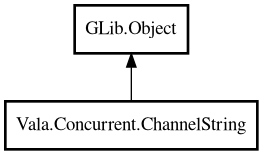

ChannelString
Object Hierarchy:

Description:
public class ChannelString : Object
Thread-safe string message-passing channel.
In unbuffered mode (default), send blocks until a receiver calls receive, providing strict rendezvous semantics.
Example:
var ch = ChannelString.buffered (5);
ch.send ("hello");
string msg = ch.receive ();
Content:
Static methods:
Creation methods:
Methods:
- public int capacity ()
Returns the buffer capacity.
- public void close ()
Closes the channel.
- public bool isClosed ()
Returns whether the channel is closed.
- public string receive ()
Receives a string from the channel, blocking until available.
- public void send (string value)
Sends a string value into the channel. For buffered channels, blocks
if the buffer is full. For unbuffered channels, blocks until a receiver calls receive.
- public int size ()
Returns the number of items in the buffer.
- public StringBox? tryReceive ()
Tries to receive a string without blocking.
- public bool trySend (string value)
Tries to send a string value without blocking.
Inherited Members:
All known members inherited from class GLib.Object
- @get
- @new
- @ref
- @set
- add_toggle_ref
- add_weak_pointer
- bind_property
- connect
- constructed
- disconnect
- dispose
- dup_data
- dup_qdata
- force_floating
- freeze_notify
- get_class
- get_data
- get_property
- get_qdata
- get_type
- getv
- interface_find_property
- interface_install_property
- interface_list_properties
- is_floating
- new_valist
- new_with_properties
- newv
- notify
- notify_property
- ref_count
- ref_sink
- remove_toggle_ref
- remove_weak_pointer
- replace_data
- replace_qdata
- set_data
- set_data_full
- set_property
- set_qdata
- set_qdata_full
- set_valist
- setv
- steal_data
- steal_qdata
- thaw_notify
- unref
- watch_closure
- weak_ref
- weak_unref